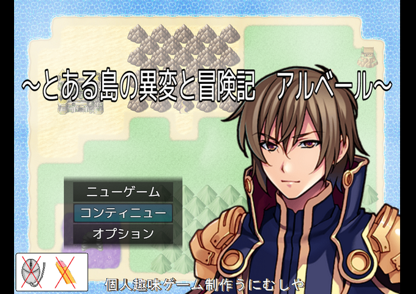

| No.25 とある島の異変と冒険記～アルベール～ | |
|
 | |
| 作成ツクール：RPGツクールMZ | |
| ジャンル：RPG | |
| 作者名：個人趣味ゲーム制作うにむしや | |
| ＜配信/動画投稿/翻訳＞可／可／可 | |
|
＜作者のコメント＞ ※注意： 本作品はRPGツクールMZで製作しておりますが 画面タッチおよび、マウスクリックには一切対応しておりません。 また、本作には『もしも』シリーズ要素はございません。 ここは、とある島————の様だ。 その島で、一人の倒れている男が目覚めた。 男の名はアルベール、魔術士の様だ。 だが、それ以外の記憶は無い。 自分はいったい何者なのか？ この島は一体、何があったのか？ アルベールが歩き出した時、この島もその時が動き出す――。 プラグインを使用して制作した、初ツクールＭＺの中～短編作品（推定プレイ時間４～５時間以上）になります。 よろしければ、プレイしてみてください。 | |
管理人から イケメンとイケメンがメインキャラなのかな。戦闘背景も凝ってたりと冒険してる感じがあって雰囲気サイコーです イケメンとイケメンがメインキャラなのかな。戦闘背景も凝ってたりと冒険してる感じがあって雰囲気サイコーです |
|
| ダウンロード(作者様のitchにて) PLiCyで遊ぶ 感想掲示板 | |
| 前の作品 次の作品 / TOPへ戻る | |